Hatchery and seed
Seedlings and seeded substrates with guaranteed size and density, free of fouling, so every farm starts with quality material.
- Hatchery design and start up
- Sori, gametophyte and seeding protocols
- Training for laboratory teams
Seaweed hatchery, farming and restoration services from Puerto Varas, Chile, with applied research to turn seaweed into valuable products.
We work across the whole life of seaweeds: producing healthy seed in the hatchery, taking it to sea and keeping a farm running, and researching what to do with the biomass once it is harvested.
Seedlings and seeded substrates with guaranteed size and density, free of fouling, so every farm starts with quality material.
From site to mooring: area selection, farm system design, installation and operation at sea, and restoration of natural kelp beds.
Applied research, farm modeling and analysis of production data, together with the development of products from the biomass.
Chile is one of the world’s largest seaweed producers, but almost all of its harvest comes from natural beds: variable quality, little traceability and pressure on the ecosystem. Farming is the alternative, and it is possible, profitable and urgent.
A seaweed farm captures carbon, takes up nitrogen and phosphorus from the water and creates habitat for hundreds of species. It needs no freshwater, fertilizer or arable land.
It gives small-scale fishers and coastal communities an alternative to wild harvesting, with training, quality seed and formal work at sea.
Farmed, traceable biomass of consistent quality opens higher-value markets than wild-harvested seaweed and diversifies the coastal economy.
Kelp farming in Chile is still mostly at pilot scale. Every gap we solve stops being an obstacle for those who come next.
Hatcheries with repeatable protocols, so that yield at sea does not depend on chance.
Gametophyte banks and selection of local strains to conserve genetic diversity and face warmer seas.
Direct machine seeding, line and mooring design, and mechanized harvest to produce at scale.
Products and processes that turn biomass into higher-value ingredients, from biostimulants to biomaterials.
Our work contributes to the United Nations Sustainable Development Goals
Macrocystis pyrifera alternates between a giant plant and a microscopic stage. Hatchery work is about controlling that invisible stage. There are two routes to produce seed: choose one and walk through its steps.
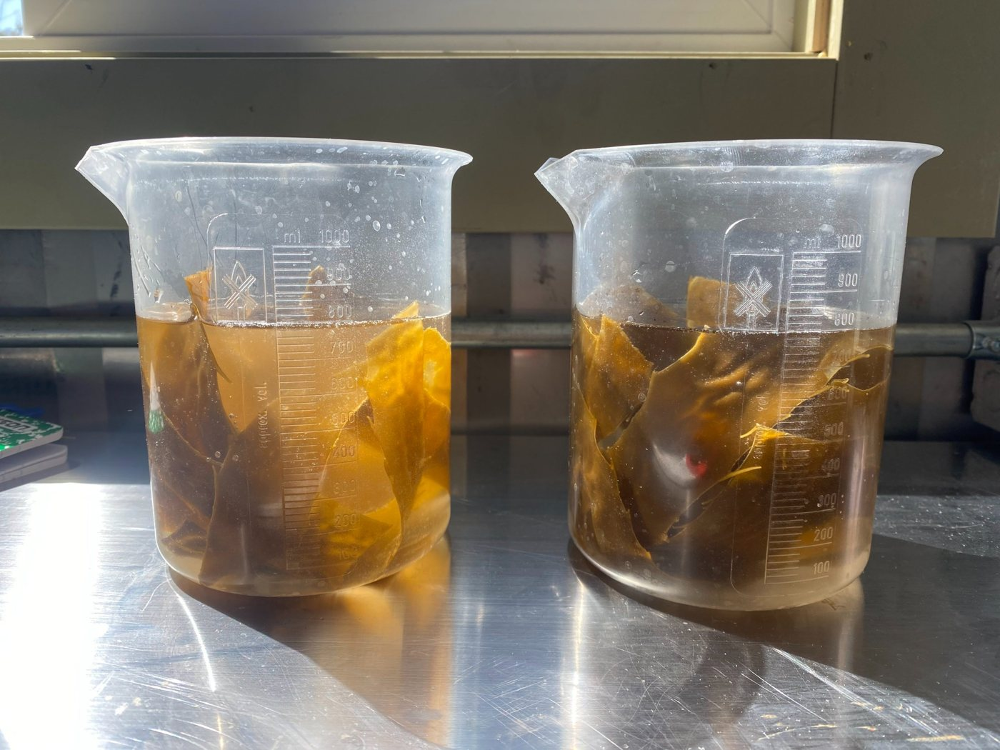
Fertile blades near the base of the plant develop sori, dark patches where millions of spores form. They are collected, cleaned and selected by maturity and origin.
What we doProtocols for collecting, cleaning and shipping sori, including shipments abroad.
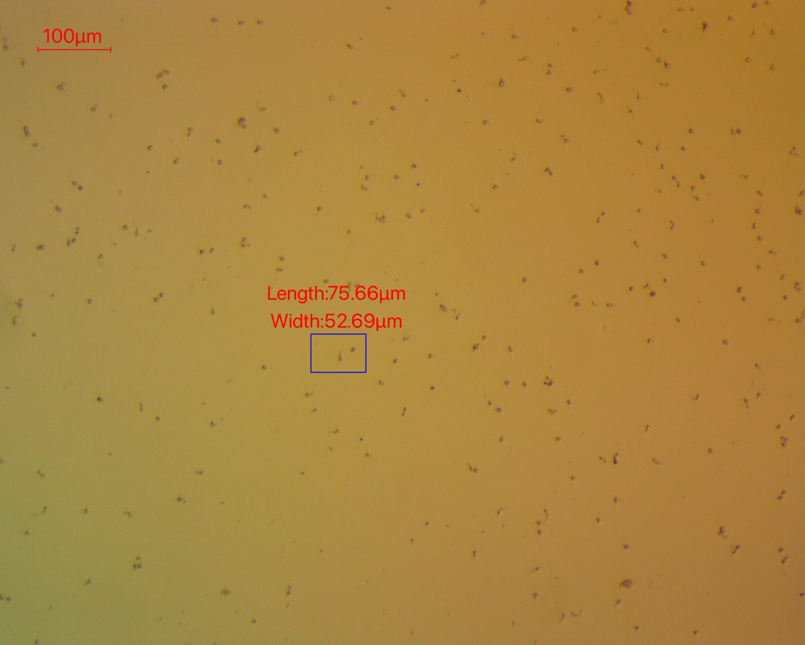
In the laboratory the sori release zoospores: swimming cells a few microns long looking for a place to settle. Temperature, light and hygiene decide how many survive.
What we doControl of spore density and bacterial contamination from day one.
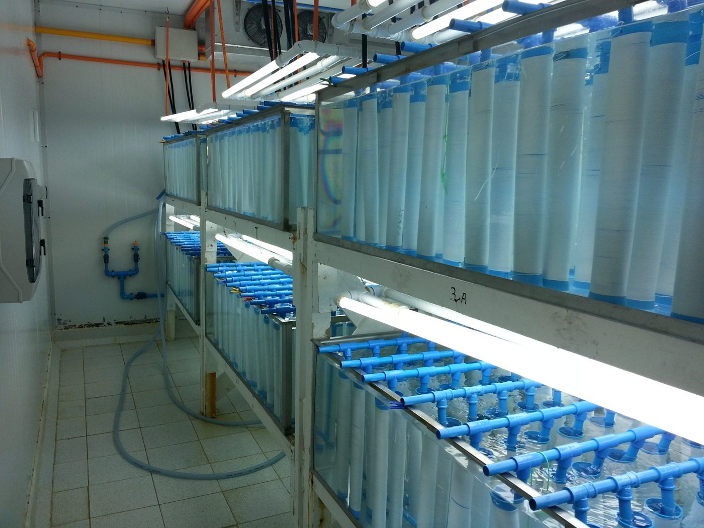
Zoospores settle on fine twine wound on spools, inside tanks with controlled light, temperature and nutrients. In six to eight weeks the sporophytes reach a few millimeters and the twine is ready to go to sea.
What we doProduction of seeded spools, with density and contamination control throughout the tank period.
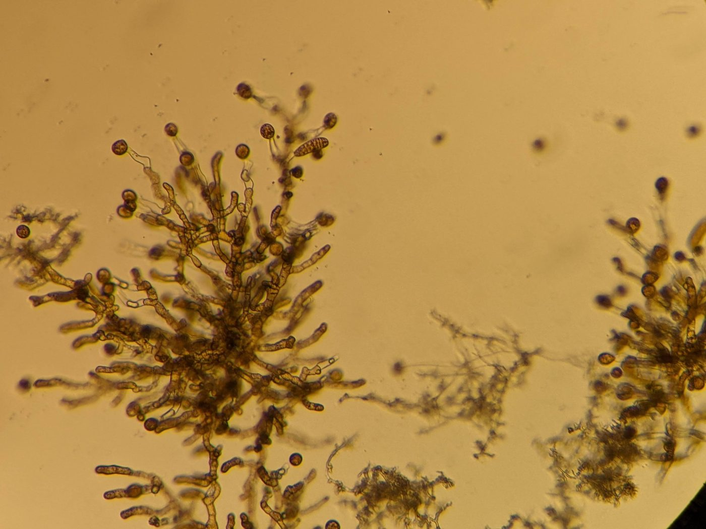
Zoospores germinate into microscopic male and female gametophytes that are kept free floating in culture medium, in a vegetative growth phase without reproduction.
What we doGametophyte isolation and culture under controlled light, temperature and nutrients.
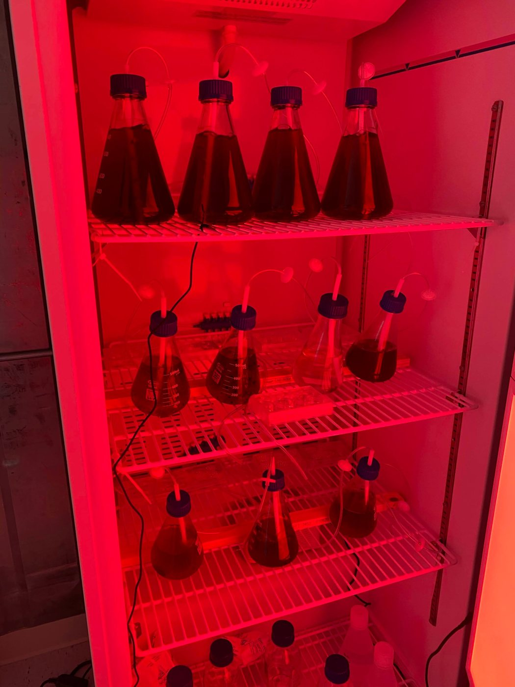
Stock cultures kept under low light and temperature serve as a germplasm bank for years. From them, biomass is multiplied by fragmentation in flasks, carboys and photobioreactors, without relying on new wild broodstock.
What we doGermplasm banks by origin and production scale propagation for each season.
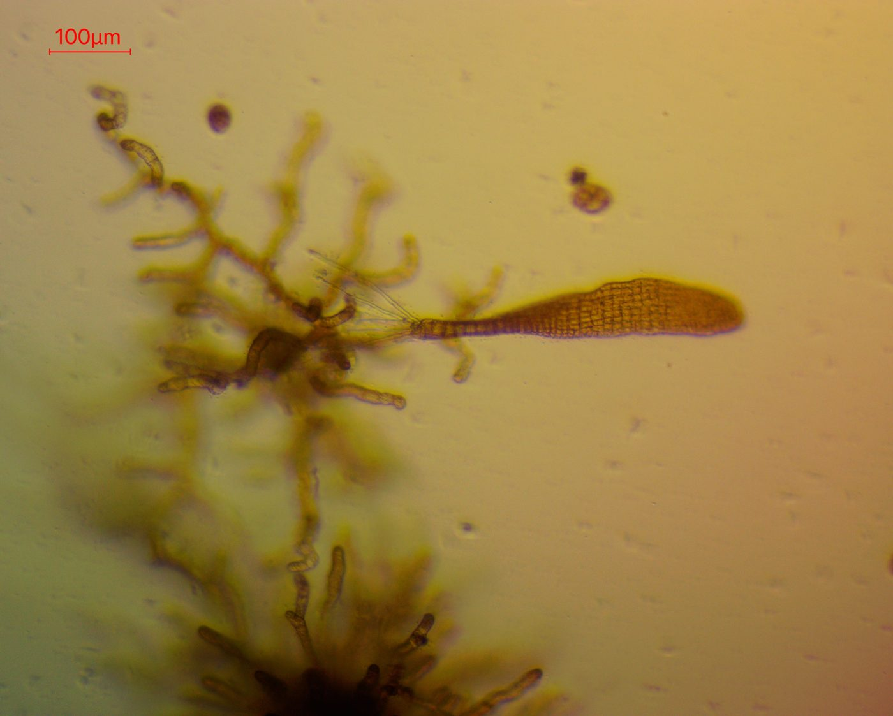
About three weeks before seeding, a change in light and photoperiod triggers reproduction. Gametophytes produce eggs and sperm, and the fertilized eggs give rise to the first sporophytes.
What we doInduction trials per batch to secure culture response on the seeding date.
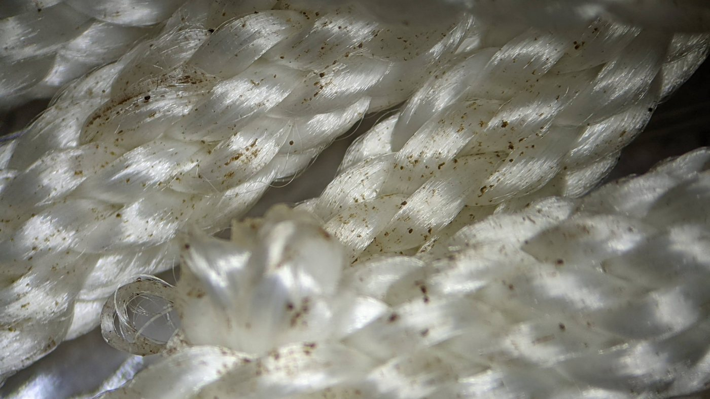
Induced seed is applied to the grow rope in two steps with a seeding machine: first the suspension of sporophytes and gametophytes, then a natural binder that fixes it to the fibers. It can also be seeded onto spools, as in the traditional route.
What we doMechanized direct seeding and spool seeding, depending on site and project scale.
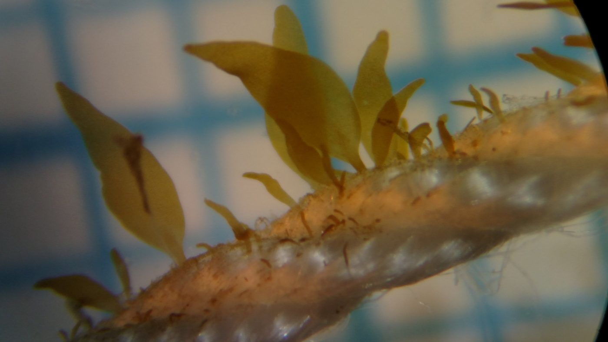
The sporophyte is the stage that grows into a plant several meters long. The first blades appear attached to the twine or grow rope and are tracked under the microscope until outplanting.
What we doSize and density monitoring to deliver seed with guaranteed parameters.
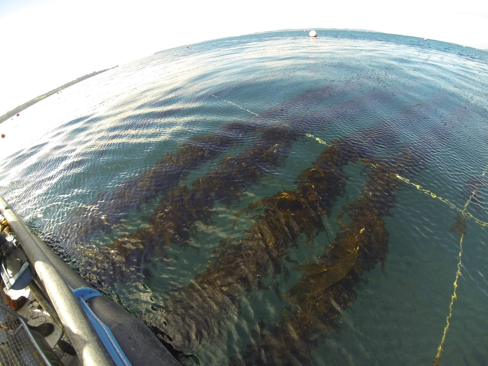
At the farm site, the spool twine is wrapped around the longline, or the seeded rope is deployed directly, held by buoys and moorings. In a few months giant kelp can reach several meters and is ready to harvest.
What we doDesign, installation and operation of farm systems in Chile and abroad.
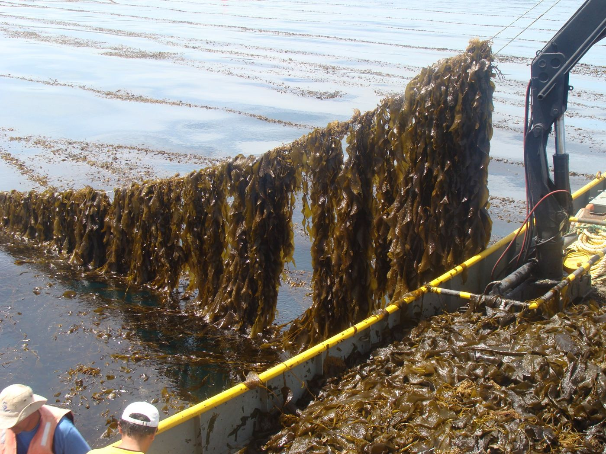
When the kelp reaches its target biomass, the lines are hauled with a crane and the seaweed is cut and loaded on board. Harvest can be total or partial, leaving the base of the plant to regrow.
What we doHarvest planning, biomass records per line and handling of the biomass to its destination.
We farm seaweed alongside salmon sites to recover the nitrogen, phosphorus and carbon released by fish production, and we deliver measured results that third parties can verify.
In 2026 Chile’s Undersecretariat of Fisheries and Aquaculture announced a change to Resolution 1089 that lets authorized salmon concessions add macroalgae, integrated or alternating with fish, without modifying the technical project. This opens integrated multi-trophic aquaculture (IMTA) to commercial scale in Chile.
Nitrogen, phosphorus and carbon balance from fish biomass, feed and local currents. It defines how much seaweed area is needed and where to place it.
Native species such as giant kelp and Gracilaria, lines and moorings compatible with the fish pens, and seed from our hatchery.
We run the seaweed farm and coordinate it with the site’s production cycle and fallowing, partnering with local fishers and unions.
Harvested biomass times laboratory N, P and C content. One report per season, traceable and open to independent verification.
38 kgof dissolved nitrogen are released per tonne of salmon produced, at a feed conversion ratio of 1.2.
20 a 40 kgof nitrogen leave the sea with every dry tonne of harvested seaweed.
≈ 30 %of the dissolved nitrogen from a 4,500 t site could be recovered with about 50 hectares of seaweed.
Reference figures from our nutrient balance model and SINTEF Ocean (2026); every site needs its own calculation. Carbon captured in the biomass is measured and reported; turning it into removal credits depends on methodologies still under development.
We are developing a liquid biostimulant from Macrocystis pyrifera grown in the Los Lagos Region of Chile.
A seaweed biostimulant stimulates the plant’s natural processes: better growth, better use of nutrients and greater stress tolerance, thanks to the bioactive compounds in giant kelp.
Helps sustain growth when water is short or irrigation is limited.
Supports plant function under extreme temperatures and UV exposure.
Supports water uptake and growth in saline soils or irrigation water.
Improves uptake and transport of available nutrients: more return from applied fertilizer.
Stimulates beneficial microbes, nutrient cycling and soil organic matter.
Boosts germination, root development and shoot formation.
Speeds recovery after a stress event and protects yield potential.
The outcome of a plant that works better and tolerates more stress.
Alginates, fucoidan and laminarin: stimulate growth, nutrient uptake and stress tolerance.
Antioxidants that modulate plant defenses and regulate growth.
Zoospores germinate into microscopic male and female gametophytes that are kept free floating in culture medium, in a vegetative growth phase without reproduction.
The sporophyte is the stage that grows into a plant several meters long. The first blades appear attached to the twine or grow rope and are tracked under the microscope until outplanting.
One harvest can yield several products. We research sequential extraction processes that use the entire biomass, from the soluble extract to biopolymers.
First soluble fraction, obtained by osmotic shock and heat treatment.
Sulfated polysaccharide with antioxidant, anti inflammatory and immunomodulatory activity.
Gelling and thickening agent; the base for biopolymers, hydrogels and bioplastics.
Soil amendments and new applications, so nothing goes to waste.
The optimization of this sequential extraction in Macrocystis pyrifera was published in ACS Omega (2026), with researchers from the Federal University of Rio de Janeiro.
We take farmed kelp from the lab to the pilot and on to the market. We design publicly funded projects, work with universities and companies, scale up processes and assess the technical and economic feasibility of each product.
We develop feeds that include kelp for farmed animals, as a source of minerals, fiber and functional polysaccharides.
Meals and ingredients from farmed kelp for healthy foods, building on our drying, milling and nutritional characterization projects.
A stabilized paste of farmed Macrocystis that keeps its native polysaccharide and polyphenol profile. We are preparing a shipment to Korea to evaluate it as a raw material for the cosmetics industry.
Kelp alginate is the basis for films, hydrogels and biodegradable bioplastics that can replace fossil based materials.
Fucoidan, alginate and polyphenols obtained by sequential extraction, for applications in nutrition, health and personal care.
Biostimulants and soil amendments from kelp, for crops that cope better with stress and for livelier soils.
Macrocystis pyrifera farmed in the Los Lagos Region, chopped fresh and stabilized with natural ingredients. It keeps the native alginate, fucoidan and polyphenol profile of fresh biomass, as a raw material for extracts, cosmetics and biostimulants.
Request a sample and data sheetThe company is set up to provide seaweed farming, research and consulting services.
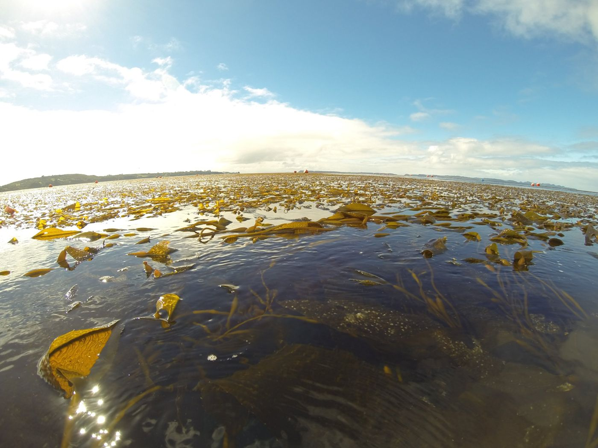
Seed production, environmental monitoring and installation of giant kelp farm systems.
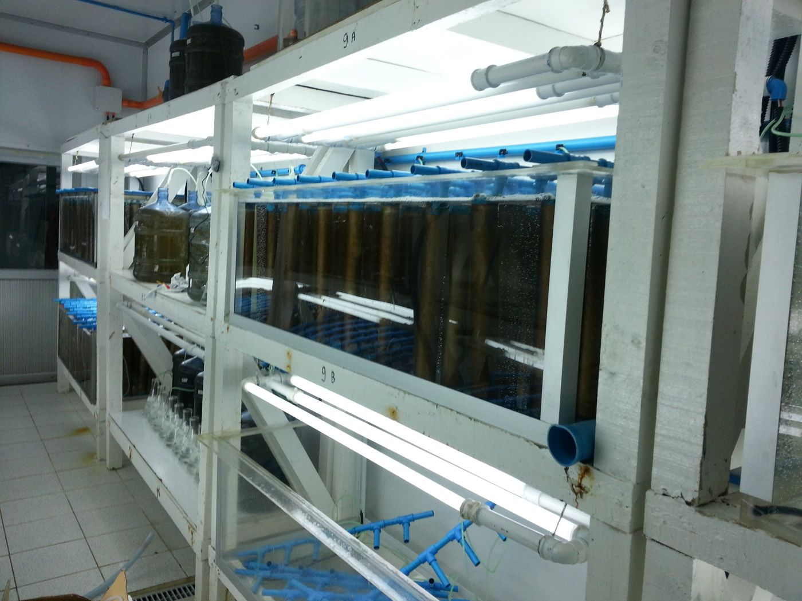
Pilot giant kelp hatchery and farm with training for small scale fishers, funded by the regional government.
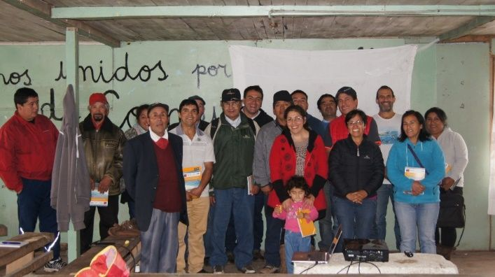
Solar dryer prototype to produce seaweed meal, supported by Corfo.
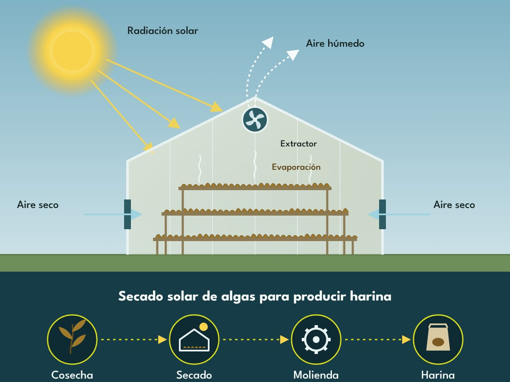
Principal investigator in a U.S. Department of Energy program on large scale macroalgae farming.
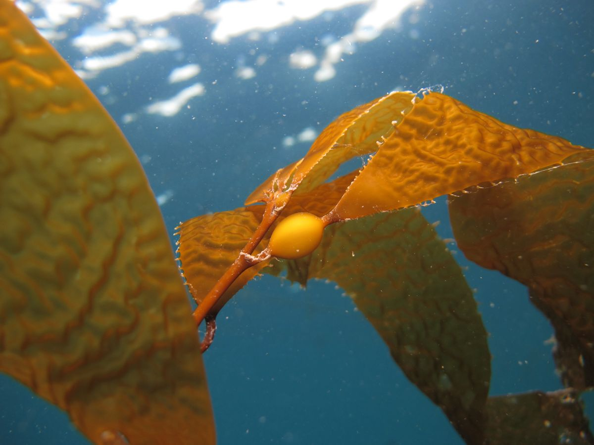
Farm system design and support for site license applications in the North Atlantic.
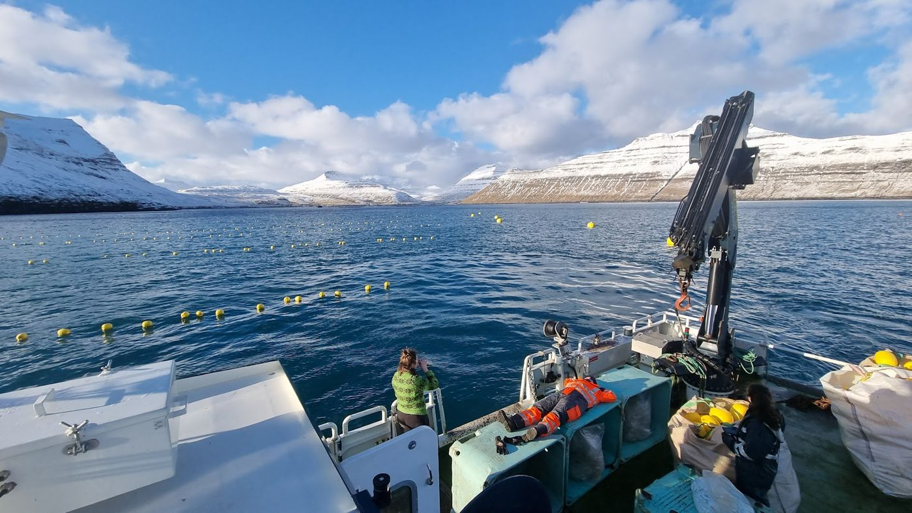
Protocols for extracting and shipping Macrocystis sori, and a technical hatchery and farming proposal for a Red Sea pilot.
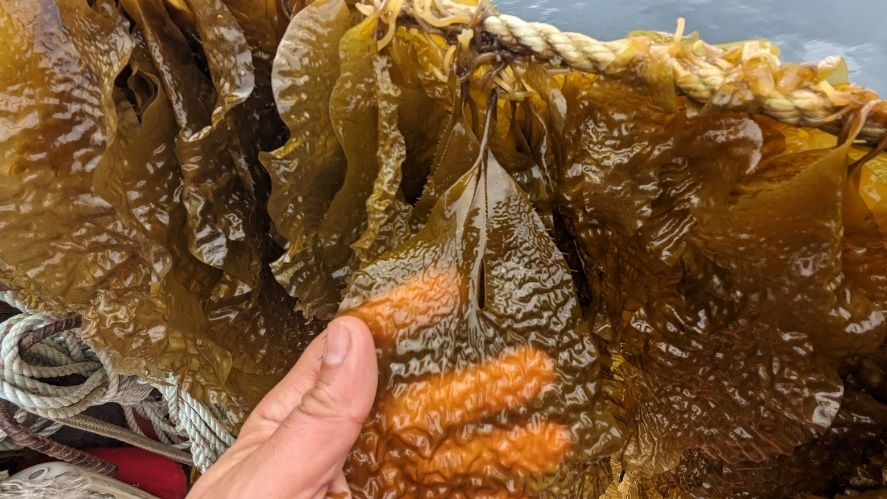
Research and development services for Ocean Rainforest, an open ocean seaweed farming company.
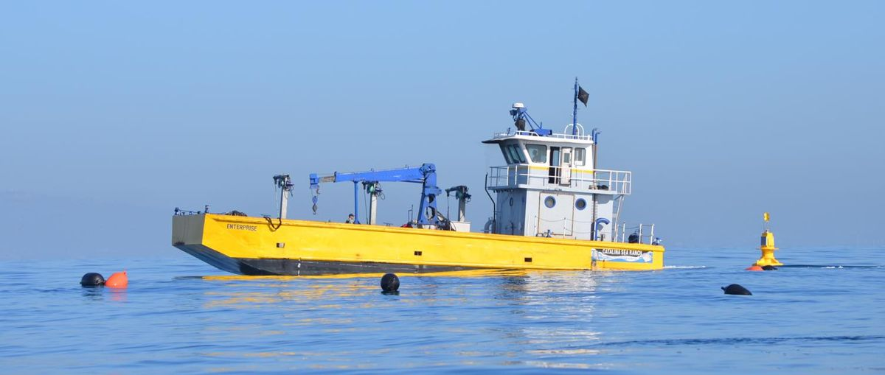
Field advisory for Cascadia Seaweed on hatchery and farming best practices.
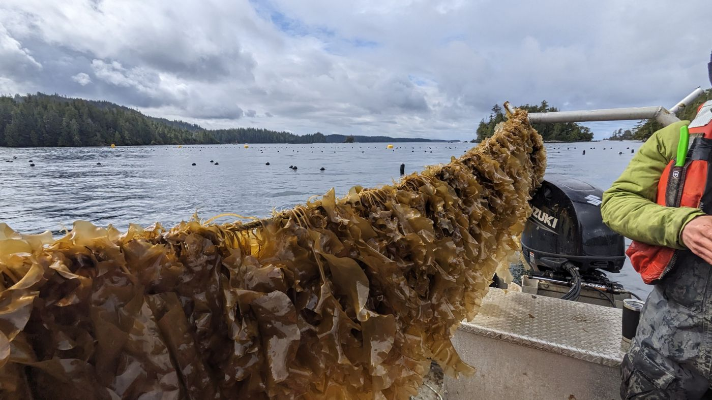
Leading an offshore Macrocystis pyrifera farming project in California, funded by the U.S. Department of Energy with US$ 9 million.
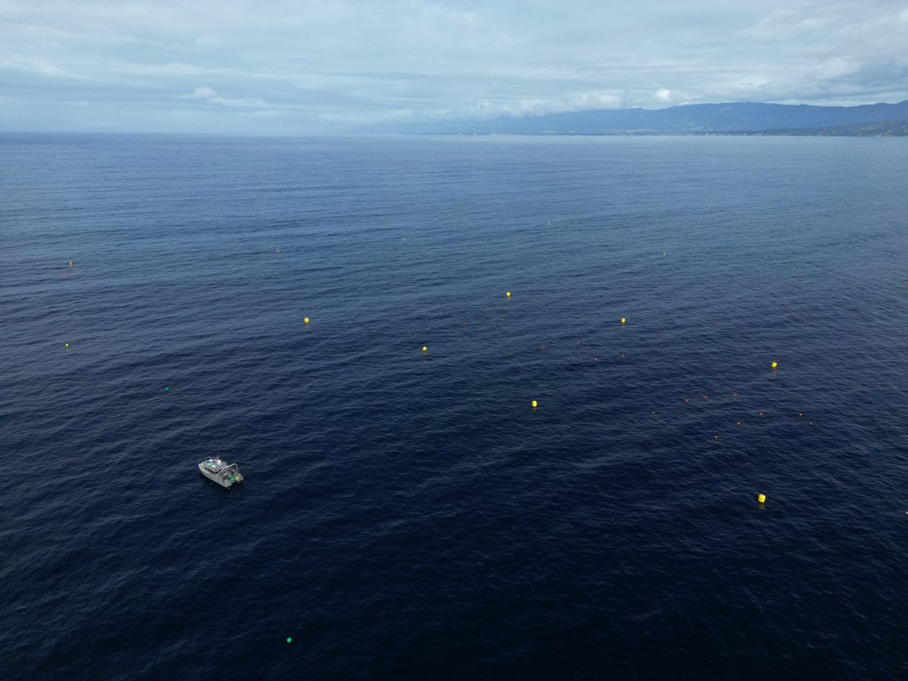
Installation of a pilot plant for seaweed extraction and processing.
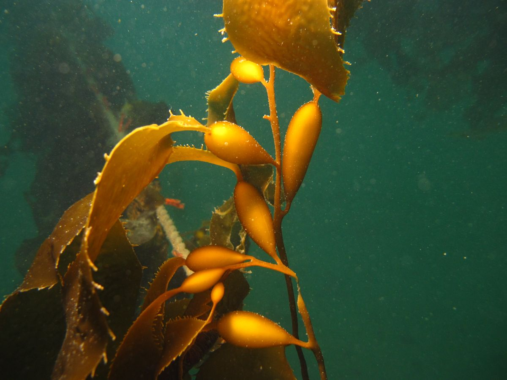
Silva, F. C. O., et al., incl. Infante Rosselot, J. ACS Omega 11: 40402.
Kwon, H., Hawkins, T. R., Zaimes, G. G., Infante, J., et al. Algal Research 82: 103654.
Frieder, C. A., et al. Frontiers in Marine Science.
Bak, U. G., Gregersen, O. & Infante, J. Botanica Marina.
Camus, C., Infante, J. & Buschmann, A. H. Aquaculture 502.
Camus, C., Infante, J. & Buschmann, A. H. Reviews in Aquaculture.
Buschmann, A. H., Camus, C., Infante, J., et al. European Journal of Phycology.
Buschmann, A. H., Prescott, S., Potin, P., Faugeron, S., Vásquez, J. A., Camus, C., Infante, J., et al. Advances in Botanical Research 71: 161.
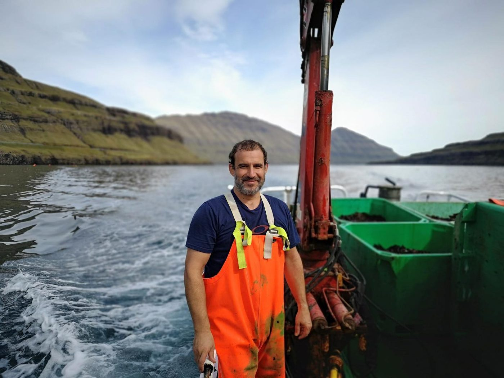
Aquaculture engineer with an MBA and more than twenty years in marine aquaculture, applied research and commercial development across Chile, the United States, Mexico, Australia, Scotland and the Faroe Islands, among other countries.
He has led large scale open water seaweed farming operations and multidisciplinary hatchery, farming and laboratory teams. He has directed publicly funded research programs in Chile and abroad, from proposal through budget management and reporting, bringing together biology, farm system engineering and technical and economic evaluation.
He has represented companies and consortia before regulators, funding agencies, investors, academia and industry, and has turned research results into working farm systems and peer reviewed publications.
PADI dive instructor and Chilean Maritime Authority specialist diver.
We have worked with
A seaweed farm that is good business is the one that best protects the sea.
Let’s build your project
Tell us where your project stands: a hatchery to design, a farm to install or a product idea to evaluate.